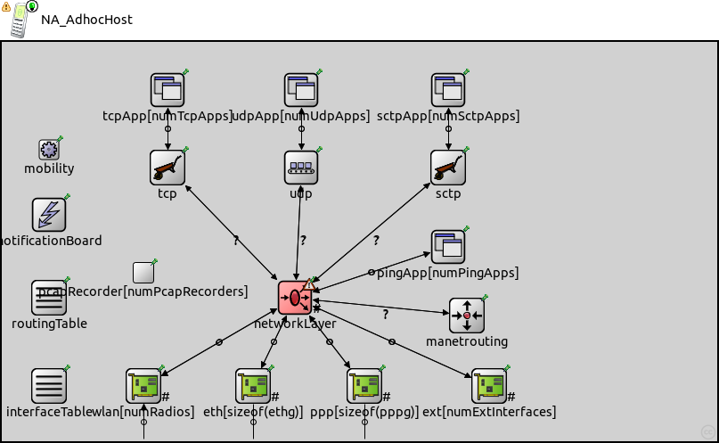
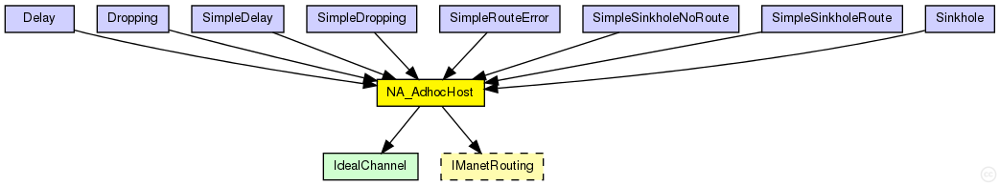
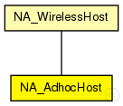

This documentation is released under the Creative Commons license
This documentation is released under the Creative Commons licenseWireless ad hoc host. Modificated from WirelessHost module. Redefined from INET framework and used as normal host.
It is used as a simple AdhocHost like in INET framework. These hosts never behaves as attacker host. The only differente regards AdhocHost is that in this case they are using the MA framework arquitecture.
See also: AdhocHost, WirelessHost
Author: Gabriel Maciá Fernández, gmacia@ugr.es
Date: 01/22/2013
The following diagram shows usage relationships between types. Unresolved types are missing from the diagram.
The following diagram shows inheritance relationships for this type. Unresolved types are missing from the diagram.
| Name | Type | Description |
|---|---|---|
| NA_WirelessHost | compound module |
Generic wireless host. Modificated from WirelessHost module. Migrated from INET for inheritance requirements of NA_AttackerAdhocHost and NA_AttackerWirelessHost |
| Name | Type | Description |
|---|---|---|
| Delay | network | (no description) |
| Dropping | network | (no description) |
| SimpleDelay | network | (no description) |
| SimpleDropping | network | (no description) |
| SimpleRouteError | network | (no description) |
| SimpleSinkholeNoRoute | network | (no description) |
| SimpleSinkholeRoute | network | (no description) |
| Sinkhole | network | (no description) |
| Name | Type | Default value | Description |
|---|---|---|---|
| numExtInterfaces | int | 0 | |
| numRadios | int | 1 |
the number of radios in the router. by default no wireless |
| numPcapRecorders | int | 0 |
no of PcapRecorders. |
| mobilityType | string | "StationaryMobility" | |
| routingFile | string | "" | |
| IPForward | bool | true | |
| numTcpApps | int | 0 |
no of TCP apps. Specify the app types in INI file with tcpApp[0..1].typename="TCPEchoApp" syntax |
| numUdpApps | int | 0 |
no of UDP apps. Specify the app types in INI file with udpApp[0..1].typename="UDPVideoStreamCli" syntax |
| numSctpApps | int | 0 |
no of SCTP apps. Specify the app types in INI file with sctpApp[0..1].typename="SCTPServer" syntax |
| numPingApps | int | 0 |
no of PING apps. Specify the app types in INI file with pingApp[0..1].typename="PingApp" syntax |
| tcpType | string | firstAvailable("TCP", "TCP_lwIP", "TCP_NSC", "TCP_None") |
tcp implementation (e.g. ~TCP, ~TCP_lwIP, ~TCP_NSC) or ~TCPSpoof |
| udpType | string | firstAvailable("UDP","UDP_None") | |
| sctpType | string | firstAvailable("SCTP","SCTP_None") | |
| routingProtocol | string | "AODVUU" |
| Name | Value | Description |
|---|---|---|
| display | i=device/cellphone,white;bgb=803,448;i2=status/green | |
| node | ||
| labels | node |
| Name | Direction | Size | Description |
|---|---|---|---|
| radioIn [ ] | input | numRadios | |
| pppg [ ] | inout | ||
| ethg [ ] | inout |
| Name | Type | Default value | Description |
|---|---|---|---|
| networkLayer.ip.procDelay | double | 0s | |
| networkLayer.ip.timeToLive | int | 32 | |
| networkLayer.ip.multicastTimeToLive | int | 32 | |
| networkLayer.ip.fragmentTimeout | double | 60s | |
| networkLayer.ip.forceBroadcast | bool | false | |
| networkLayer.arp.retryTimeout | double | 1s |
number seconds ARP waits between retries to resolve an IPv4 address |
| networkLayer.arp.retryCount | int | 3 |
number of times ARP will attempt to resolve an IPv4 address |
| networkLayer.arp.cacheTimeout | double | 120s |
number seconds unused entries in the cache will time out |
| networkLayer.arp.globalARP | bool | false | |
| routingTable.routerId | string | "auto" |
for routers, the router id using IPv4 address dotted notation; specify "auto" to select the highest interface address; should be left empty ("") for hosts |
| routingTable.forwardMulticast | bool | false |
turns multicast forwarding on/off |
| interfaceTable.displayAddresses | bool | true |
whether to display IP addresses on links |
| pcapRecorder.verbose | bool | false |
whether to log packets on the module output |
| pcapRecorder.pcapFile | string | "" |
the PCAP file to be written |
| pcapRecorder.snaplen | int | 65535 |
maximum number of bytes to record per packet |
| pcapRecorder.dumpBadFrames | bool | true |
enable dump of frames with hasBitError |
| pcapRecorder.moduleNamePatterns | string | "wlan[*] eth[*] ppp[*] ext[*]" |
space-separated list of sibling module names to listen on |
| pcapRecorder.sendingSignalNames | string | "packetSentToLower" |
space-separated list of outbound packet signals to subscribe to |
| pcapRecorder.receivingSignalNames | string | "packetReceivedFromLower" |
space-separated list of inbound packet signals to subscribe to |
// // Wireless ad hoc host. Modificated from WirelessHost module. // Redefined from INET framework and used as normal host. // // It is used as a simple AdhocHost like in INET framework. These hosts never // behaves as attacker host. The only differente regards AdhocHost is that in // this case they are using the MA framework arquitecture. // // @see AdhocHost, WirelessHost // // @author Gabriel Maciá Fernández, gmacia@ugr.es // @date 01/22/2013 module NA_AdhocHost extends NA_WirelessHost { parameters: @display("i=device/cellphone,white;bgb=803,448;i2=status/green"); wlan[*].mgmtType = default("Ieee80211MgmtAdhoc"); // use adhoc management string routingProtocol @enum("AODVUU","DYMOUM","DYMO","DSRUU","OLSR","OLSR_ETX","DSDV_2","Batman") = default("AODVUU"); IPForward = default(true); submodules: manetrouting: <routingProtocol> like IManetRouting if routingProtocol != "" { @display("p=522,307"); } connections: networkLayer.manetOut --> manetrouting.from_ip if routingProtocol != ""; networkLayer.manetIn <-- manetrouting.to_ip if routingProtocol != ""; }
This documentation is released under the Creative Commons license